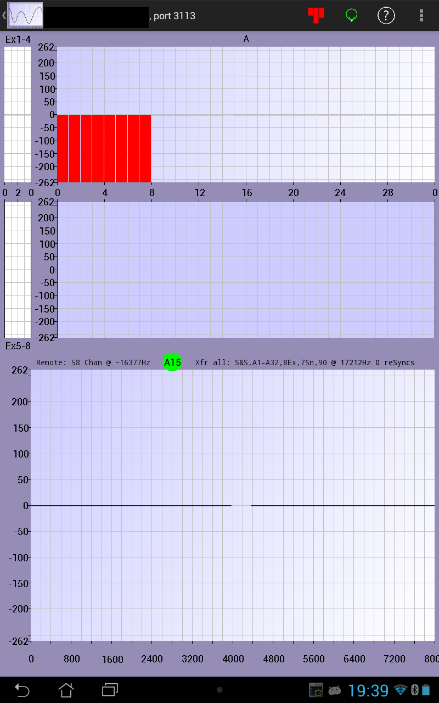

June 25, 2015
This document describes a sample Android client App BSChannelViewer. It is intended as a proof of concept to illustrate what can be done with the 2015 RingBuffer library's client/server sample streaming feature. For full details on how to setup a server to communicate with this client see Try Client/Server.
The main screen displayed by this App is shown here, in portrait orientation mode:
The lower (or right in landscape mode) part of the screen provides a continuous trace of one of the channels being sampled on the server computer.
The channel being displayed can be stepped numerically by using fling gestures over the display panel; right-to-left steps the channel number up, left-to-right steps down.
The channel being displayed can also be chosen more directly by touching the desired channel in the top (or left in landscape mode) window.
The trace window can be re-scaled in amplitude by using a double tap gesture in the panel. Each double tap steps through a set of defined amplitude scales.
The time scale can be changed by using two fingers and moving them horizontally closer or farther apart. This steps through a set of defined time scales.
Screen updates can be paused by using a fling down gesture. Use a fling up to restart updates.
The title line above the trace panel displays:
The main screen displayed by this App is shown here, with "cap" electrodes displayed, in landscape orientation mode:
The upper (or left) display shows channel offsets for the channels currently being transferred from the server. This display is similar to the channel offset display in ActiView.
If you touch a channel that is not being transferred (and displayed), a new set of channels is requested from the server and that channel becomes the channel displayed in the lower (or right) trace panel.
The display can be re-scaled by using a double tap gesture in the window.
The upper (or left) display can be changed to a "cap layout" display by touching the "head" icon in the upper right corner of the screen. In the "cap" display, channel offset is indicated by a colour ring around the electrode. Again, only the channels currently being transmitted from the server have this ring.
If you touch an electrode that is not being transferred, a new set of channels is requested from the server and that electrode (channel) is displayed in the lower (or right) panel.
This display can be magnified by using a double tap gesture. When magnified, the window can be scrolled by moving a finger around on the display.
The main screen displayed by this App is shown here, with "cap" electrodes labeled rather than numbered, in landscape orientation mode: